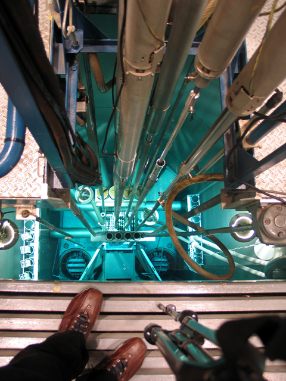
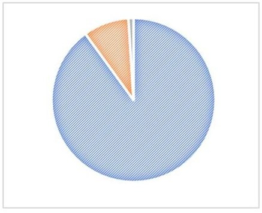
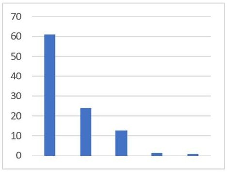
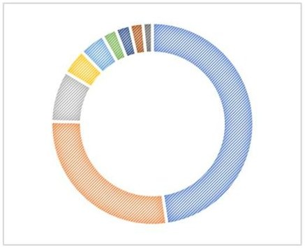
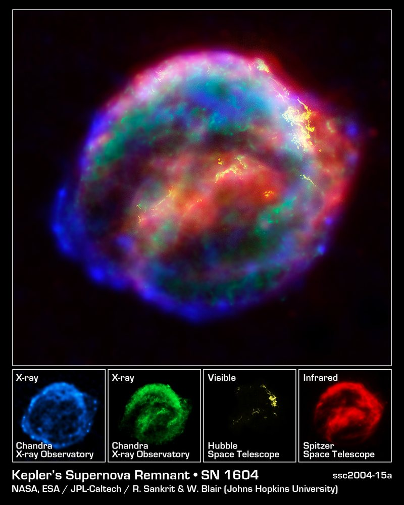

S1Les éléments chimiques et leurs abondances
≈ 1 h 30Savoir ce qu'est un élément chimique, découvrir lesquels dominent dans l'Univers, dans les roches et dans ton propre corps, et distinguer les deux façons de transformer un noyau — et apprendre au passage comment ce cours va fonctionner toute l'année.
Comment ce cours va fonctionner
Ce cours n'est pas un PDF à lire. C'est une suite d'étapes : tu lis, tu regardes, tu manipules, puis tu produis quelque chose. Chaque étape que tu valides fait avancer la barre en haut de la séance ; quand une séance est entièrement validée, la suivante se déverrouille.
- Ce qui se corrige tout seul : les QCM, les textes à trous, les classements. La réponse est dans la page ; le navigateur te dit tout de suite si c'est juste, et pourquoi.
- Ce qu'un humain relira : tes réponses rédigées. Elles partiront à ton professeur, qui les lira et te répondra. Une étape est validée dès l'envoi — pas besoin d'attendre la correction pour continuer.
- Ce que personne ne notera jamais : les réflexions perso. Pas de bon, pas de mauvais. On les lit, on n'y met pas de note.
- Ta trace : en fin de séance, tu pourras télécharger ta fiche — un récapitulatif de ce que tu as écrit. Tu la déposes dans un dossier que tu crées sur OneDrive si tu le souhaites, ou tu la conserves de la manière qui te convient. Conseil : passe par OneDrive, tu la retrouveras depuis n'importe quel ordinateur.
Cinq questions de seconde, pour te situer. Elles ne comptent pas, personne n'en voit le résultat : elles te disent seulement si tes bases sont fraîches.
Rien de grave si plusieurs réponses t'ont échappé : ces notions sont rappelées dans la vidéo de l'étape 1.3, de 0:03 à 2:44.
On commence tout de suite. Le champ ci-dessous est une réponse rédigée : quand tu cliques, le reste de la page se floute — tu écris sans rien pouvoir recopier, et le copier-coller est bloqué. C'est voulu : ce qui compte, c'est ce que tu sais formuler.
Aucune recherche, aucune bonne réponse attendue. Tu reliras cette phrase à la fin du chapitre.
Qu'est-ce qu'un élément chimique ?
Tu viens d'écrire, sans aucune aide, d'où viennent selon toi les atomes de ton corps. Garde cette phrase en tête : tu la reliras à la fin du chapitre. Pour y répondre vraiment, il faut d'abord savoir de quoi on parle — ce qu'est un élément chimique.
Il existe plusieurs « types » d'atomes : les atomes d'hydrogène, de carbone, de fer… Ces différents types d'atomes sont appelés des éléments chimiques. On en connaît aujourd'hui 118, dont 94 existent dans la nature ; les 24 autres n'ont jamais été observés ailleurs que dans un laboratoire : ils sont d'origine .
C'est ici que la confusion se glisse toujours : atome et élément chimique ne sont pas la même chose. Trois objets différents peuvent occuper la même case du tableau périodique :
- un atome neutre — autant d'électrons autour que de protons dans le noyau ;
- un ion — le même atome, qui a gagné ou perdu des électrons. Son noyau, lui, n'a pas bougé ;
- un isotope — le même élément, avec un nombre de neutrons différent. Son nombre de protons, lui, n'a pas bougé.
Dans les trois cas, Z est le même : c'est donc le même élément chimique. Le sodium Na, l'ion sodium Na+ et le sodium 22 occupent une seule et même case : la onzième.
L'uranium (Z = 92) est le dernier élément que la nature fournit en quantité notable. Au-delà, il n'y a plus rien à récolter : il faut le fabriquer. C'est faisable, et cela se fait — mais pas de la façon qu'on imagine.
Dans un accélérateur de particules, on lance des noyaux légers sur une cible d'atomes lourds. Une collision sur des milliards réussit : le noyau de la cible avale le projectile et un noyau plus lourd apparaît. Il vit parfois quelques millisecondes — assez pour être détecté, jamais pour être mis en flacon. C'est ainsi qu'ont été créés les éléments les plus lourds du tableau.
Un réacteur nucléaire, lui, fabrique en quantité industrielle un élément de la frontière : le plutonium (Z = 94). L'uranium 238, majoritaire dans le combustible, capture un neutron ; le noyau obtenu se désintègre deux fois, et donne du plutonium 239 :
Autrement dit : un réacteur qui produit de l'électricité produit aussi du plutonium, simplement en fonctionnant. C'est pour cela que le plutonium existe par tonnes sur Terre, alors qu'on n'en trouve dans la nature que des traces infimes.

La radioactivité, justement, fait l'objet du chapitre 2 — c'est le chapitre suivant.
Activité — Abondance relative des éléments
Un élément, c'est donc un nombre de protons, et rien d'autre. Reste à savoir en quelle quantité chacun est présent : la réponse n'est pas la même dans l'Univers, dans un caillou et dans ton corps.
Voici les éléments les plus abondants dans trois milieux — mais les titres des colonnes ont été retirés. À toi de les remettre. Attention aux unités : les colonnes A et C sont des pourcentages en nombre d'atomes (sur 100 atomes prélevés, combien sont de cet élément), la colonne B un pourcentage en masse (sur 100 g prélevés, combien de grammes de cet élément).
| Rang | Colonne A | Colonne B | Colonne C |
|---|---|---|---|
| 1er | H — 61 % | O — 47,7 % | H — 90 % |
| 2e | O — 24,1 % | Si — 27,7 % | He — 9 % |
| 3e | C — 12,6 % | Al — 8,2 % | — |
| 4e | N — 1,4 % | Fe — 4,1 % | — |
| 5e | — | Ca — 4,1 % | — |
| Tous les autres | 0,9 % | 8,2 % | 1 % |
Les colonnes s'arrêtent à des rangs différents : ce n'est pas un oubli. Dans l'un des milieux, deux éléments suffisent à tout dire.
🎬 Cinq minutes sur les éléments chimiques et leurs abondances. Le rappel sur le noyau atomique occupe les deux premières minutes ; les abondances commencent à 3:09.
La colonne B décrit .
La colonne C décrit .
Les mêmes données, en images. Pour chacune, commence par la légende : touche un repère numéroté, puis écris l'élément et son pourcentage en t'aidant du tableau. Tu choisis ensuite le titre du graphique.

💡 Une part écrase les deux autres. Le repère 3 regroupe tous les autres éléments : écris « autres ».

💡 Les barres sont rangées de la plus haute à la plus basse. La dernière regroupe tous les autres éléments.

💡 Neuf secteurs, mais on ne légende que les cinq plus gros, en tournant depuis le haut dans le sens des aiguilles d'une montre.
Fusion ou fission nucléaire ?
Tu sais maintenant quels éléments existent, et en quelles proportions. Avant de raconter comment ils ont été fabriqués, il faut un peu d'outillage : les deux seules façons de transformer un noyau. Toute la séance 2 s'appuiera là-dessus.
Un noyau n'est pas éternel : il peut s'assembler à un autre, ou se casser. Ces deux transformations — la fusion et la fission — sont les outils de toute la fabrication des éléments. Tu les retrouveras dans les trois nucléosynthèses de la séance 2, et la fission au cœur de nos réacteurs nucléaires.

Par exemple, dans le cœur d'un réacteur nucléaire, un neutron frappe un noyau d'uranium 235, qui se casse en baryum 141 et en krypton 92 en libérant trois neutrons :
🎬 La vidéo du bouton « Fission ou fusion » de la diapositive 9.
Voici six réactions. Pour chacune, choisis : fusion, fission, ou ni l'une ni l'autre. La méthode tient en une question : combien de noyaux entrent, et combien sortent ?
Deux corrections d'écriture ont été faites sur les réactions du cours source, où le numéro atomique était erroné :
- réaction 2, l'oxygène était écrit avec Z = 6 — il vaut 8 (et la conservation de la charge l'impose : 7 + 1 = 8) ;
- même vérification faite sur les cinq autres : elles sont justes.
À confirmer avant de rediffuser le PDF d'origine, qui porte encore l'erreur.
- Un élément chimique est un type d'atome, défini par son numéro atomique Z — le nombre de protons de son noyau.
- On connaît 118 éléments, dont 94 naturels. Les autres sont anthropiques : fabriqués en laboratoire, et radioactifs.
- Deux transformations, et deux seulement, changent un noyau : la fusion (deux noyaux s'assemblent) et la fission (un gros noyau se casse). Une désintégration radioactive n'est ni l'une ni l'autre.
- Les abondances sont très inégales selon le milieu :
| Milieu | En tête | Ce qu'il faut retenir |
|---|---|---|
| Univers | H puis He | à eux deux, 99 % des atomes |
| Lithosphère | O puis Si (en masse) | l'oxygène, piégé dans les minéraux |
| Corps humain | H, O puis C | l'eau et le carbone du vivant |
En 1869, Dmitri Mendeleïev range les éléments connus par masse croissante et remarque que leurs propriétés reviennent périodiquement. Là où la régularité se casse, il fait un choix qu'aucun de ses contemporains n'ose : il laisse la case vide et prédit les propriétés de l'élément manquant. Le gallium, le scandium et le germanium seront découverts ensuite — conformes à la prédiction.
🎬 « En apprendre plus sur Mendeleïev » — le lien du bouton de la diapositive 2.
S2Les trois nucléosynthèses
≈ 1 h 30Trois usines, trois époques : les premières minutes de l'Univers, la vie des étoiles, et leur mort explosive. Chacune fabrique une partie du tableau périodique.
A — La nucléosynthèse primordiale
La séance 1 a installé le décor : des éléments chimiques, répartis très inégalement, et deux mécanismes — fusion et fission — pour transformer un noyau. On entre maintenant dans l'histoire elle-même, dans l'ordre chronologique. Première usine : les vingt premières minutes de l'Univers.
🎬 « L'origine des éléments chimiques », épisode 1/3 — du Big Bang à nous. Deux minutes. Prends des notes dans le cadre : tu répondras ensuite sans revenir en arrière.
- Particule élémentaire
- Un constituant de la matière qu'on ne peut pas découper en plus petit. Les premières minutes de l'Univers en sont pleines.
- Nucléon
- Un proton ou un neutron — les deux habitants du noyau.
- Noyau stable
- Un noyau qui ne se désintègre pas. Tous ne le sont pas : c'est le sujet du chapitre 2.
- Photon
- Un grain de lumière. Tant qu'il heurte sans cesse la matière, l'Univers est opaque.
Selon la théorie du Big Bang, un premier phénomène massif de nucléosynthèse s'est déroulé dans les premiers temps de l'histoire de l'Univers — entre 10 secondes et 20 minutes — lorsque la température avoisinait les 10⁹ K. Il est appelé nucléosynthèse primordiale (BBN : Big Bang Nucleosynthesis).

Lors de cet événement se sont formés la majorité des noyaux de deutérium et d'hélium 3 et 4, ainsi qu'un peu de lithium, béryllium et bore — le reste se formant grâce aux rayons cosmiques par .
B — La nucléosynthèse stellaire
Les noyaux de plus faible masse ont été synthétisés lors de la nucléosynthèse primordiale, puis tout s'est arrêté : l'Univers, en se dilatant, est devenu trop froid. Deuxième usine : les étoiles, où vont se former des éléments plus lourds.
🎬 « L'origine des éléments chimiques », épisode 2/3 — au cœur des étoiles. La vidéo donne trois températures et un débit : note-les, ils reviendront.
- Séquence principale
- La longue période où une étoile transforme son hydrogène en hélium. Le Soleil y est, pour cinq milliards d'années encore.
- Chaîne proton-proton
- La suite de fusions qui mène de quatre protons à un noyau d'hélium 4. C'est elle qui fait briller le Soleil.
- Cohésion du noyau
- Ce qui tient les nucléons ensemble. Elle est maximale pour le fer — d'où l'arrêt de la fabrication à cet élément.
On parle de nucléosynthèse stellaire car, au cours de sa vie, une étoile synthétise :
- l'hélium 4 à partir de l'hydrogène qui la constitue, et ce durant la majeure partie de sa vie, lorsqu'elle est en ;
- le carbone 12 et l'oxygène 16 durant les dernières phases de vie d'une étoile de la taille du Soleil ;
- jusqu'au silicium 28 pour les étoiles de plus de 8 ;
- puis jusqu'au nickel 56, se désintégrant en fer 56, pour ces mêmes étoiles, à la fin de leur vie.

C — La nucléosynthèse explosive
Une étoile s'arrête au fer, même la plus massive. Or ton corps contient du zinc, et une pièce d'un euro du nickel et du cuivre — tous plus lourds que le fer. Troisième usine : la mort des étoiles.
🎬 « L'origine des éléments chimiques », épisode 3/3 — des étoiles à la Terre.
Une étoile ne peut pas synthétiser par fusion avec des particules α les éléments plus lourds que le nickel 56 — se désintégrant ensuite en fer 56 —, ces derniers ayant une cohésion de leurs noyaux maximale.
Le cœur de l'étoile s'effondre alors sur lui-même, provoquant par rebond l'éjection de ses couches externes dans une violente explosion appelée .

De l'explosion, il reste un nuage de gaz et de poussières qui s'étend dans l'espace à des milliers de kilomètres par seconde : le rémanent de supernova. C'est lui qui disperse les éléments fabriqués par l'étoile, et qui ensemencera plus tard de nouvelles étoiles et de nouvelles planètes.

On parle alors de nucléosynthèse explosive car les éléments plus lourds que le fer sont formés par , captures protoniques, ou encore à la suite de photodésintégrations ou de photofissions.

Activité — Quelle nucléosynthèse ?
Les trois usines sont en place : les premières minutes, la vie des étoiles, leur mort. Il te reste à savoir laquelle a fabriqué quoi — c'est exactement ce qu'on peut te demander en devoir.
Touche un noyau dans la réserve, puis touche l'usine qui l'a fabriqué. Pour le reprendre, touche-le à nouveau dans sa colonne. Tu choisis combien de noyaux tu veux traiter : commence petit, recommence en grand.
- La nucléosynthèse primordiale, entre 10 s et 20 min après le Big Bang, forme l'hélium et les noyaux les plus légers.
- La nucléosynthèse stellaire fabrique, pendant la vie de l'étoile, tout ce qui va de l'hélium jusqu'au fer — d'autant plus loin que l'étoile est massive.
- La nucléosynthèse explosive, lors des supernovæ, fabrique tout ce qui est plus lourd que le fer.
- La fusion assemble deux noyaux en un plus lourd ; la fission casse un gros noyau en deux plus petits. Ni l'une ni l'autre ne doit être confondue avec une désintégration radioactive, où un seul noyau se transforme tout seul.
D'où viennent les atomes de ton corps ?
Tout le chapitre tenait dans une question, posée avant que tu saches quoi que ce soit : d'où viennent les atomes de ton corps ? Tu y as répondu de mémoire, à l'étape 1.1. Le moment est venu d'y revenir.
Ce qu'une bonne réponse contient :
- les trois étapes, nommées et situées dans le temps ;
- au moins un élément de ton corps par étape, avec sa provenance ;
- ce qui a transporté ces atomes jusqu'ici — la mort des étoiles.
Ces documents dépassent ce qu'on attend de toi en enseignement scientifique. Ils sont ici pour ceux que ça intéresse — jamais évalués.

Pourquoi le cycle CNO l'emporte-t-il dans les étoiles massives ? Parce que sa production d'énergie varie comme T¹⁷, contre T⁴ pour les chaînes proton-proton. Une petite hausse de température le multiplie donc de façon vertigineuse.


S3Réviser
quand tu veuxCe n'est pas une séance de cours : rien n'y est à valider, rien n'y compte. C'est ce que tu ouvres la veille du devoir — tout le chapitre en trois écrans.
Tout ce qu'il faut savoir, en une page
Chacun de ces encadrés est déjà apparu dans le chapitre, au moment où il se comprenait. Les voici rassemblés, dans l'ordre. Tout ce qui est ici est au programme ; rien de ce qui n'y est pas ne te sera demandé.
| Étape | Quand | Ce qu'elle fabrique |
|---|---|---|
| Primordiale | 10 s à 20 min après le Big Bang | H, He, un peu de Li, Be, B |
| Stellaire | pendant la vie de l'étoile | de l'hélium jusqu'au fer, selon la masse |
| Explosive | à la mort de l'étoile | tout ce qui est plus lourd que le fer |
Revoir les vidéos, puis jouer
Les cinq vidéos du parcours, dans l'ordre du récit, puis une vidéo qui résume tout et un jeu pour se tester. Aucune n'est à regarder pour la première fois ici : elles sont là pour être revues.
5 min — le rappel sur le noyau atomique, puis les abondances (à partir de 3:09) 1.4Différencier fusion et fission
4 min — une autre méthode que celle du cours : comparer les nombres de masse de part et d'autre de la flèche 2.1L'origine des éléments — épisode 1
2 min — du Big Bang à nous 2.2L'origine des éléments — épisode 2
2 min — au cœur des étoiles 2.3L'origine des éléments — épisode 3
2 min — des étoiles à la Terre
🎬 Tout le chapitre, résumé en une vidéo.
Et pour se tester à plusieurs, le jeu de bilan du chapitre :
Le grand QCM du chapitre
Dix-huit questions sur tout le chapitre. Il ne compte pas, tu peux le refaire autant de fois que tu veux — et le récapitulatif final explique chaque réponse, juste ou fausse.
Le glossaire du chapitre
Chaque mot s'ouvre quand tu valides l'étape où il est défini : ce glossaire est la trace de ton avancée. Dans le cours, les mots portent leur définition. Le bouton 📖 Glossaire, en bas à droite de l'écran, ouvre autre chose : le lexique de toute l'année, cherchable, tous chapitres confondus.